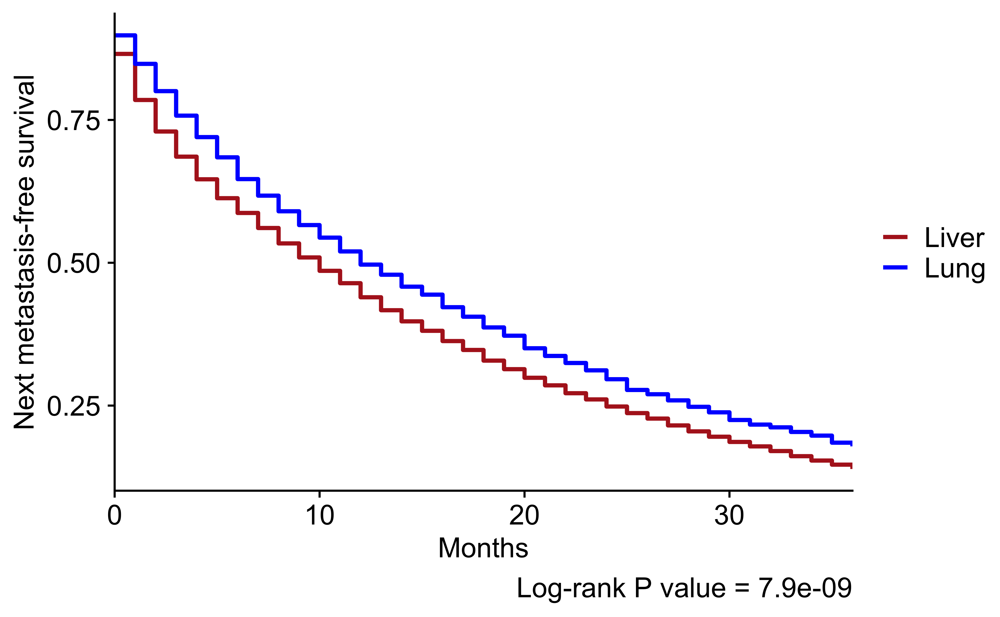
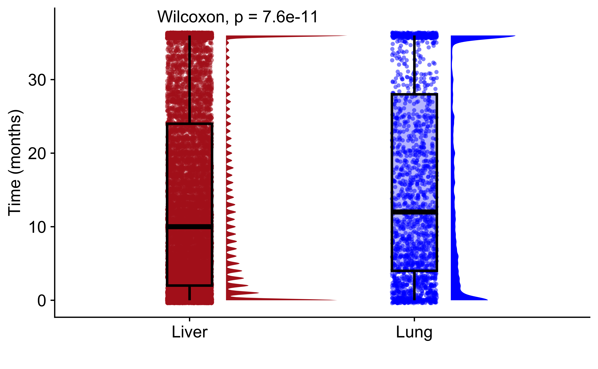
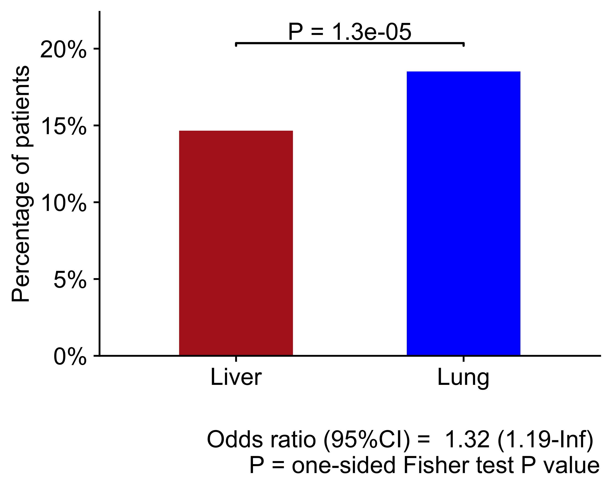

Last updated: 2025-02-06
Checks: 7 0
Knit directory: sznurkowska-met-paths/
This reproducible R Markdown analysis was created with workflowr (version 1.7.1). The Checks tab describes the reproducibility checks that were applied when the results were created. The Past versions tab lists the development history.
Great! Since the R Markdown file has been committed to the Git repository, you know the exact version of the code that produced these results.
Great job! The global environment was empty. Objects defined in the global environment can affect the analysis in your R Markdown file in unknown ways. For reproduciblity it’s best to always run the code in an empty environment.
The command set.seed(20250206) was run prior to running
the code in the R Markdown file. Setting a seed ensures that any results
that rely on randomness, e.g. subsampling or permutations, are
reproducible.
Great job! Recording the operating system, R version, and package versions is critical for reproducibility.
Nice! There were no cached chunks for this analysis, so you can be confident that you successfully produced the results during this run.
Great job! Using relative paths to the files within your workflowr project makes it easier to run your code on other machines.
Great! You are using Git for version control. Tracking code development and connecting the code version to the results is critical for reproducibility.
The results in this page were generated with repository version 7ef3b88. See the Past versions tab to see a history of the changes made to the R Markdown and HTML files.
Note that you need to be careful to ensure that all relevant files for
the analysis have been committed to Git prior to generating the results
(you can use wflow_publish or
wflow_git_commit). workflowr only checks the R Markdown
file, but you know if there are other scripts or data files that it
depends on. Below is the status of the Git repository when the results
were generated:
Ignored files:
Ignored: .Rhistory
Ignored: .Rproj.user/
Ignored: data/patients/
Ignored: data/seer/
Untracked files:
Untracked: code/R-functions/
Untracked: configuration/
Untracked: workflowr_update.R
Unstaged changes:
Modified: .gitignore
Modified: sznurkowska-met-paths.Rproj
Note that any generated files, e.g. HTML, png, CSS, etc., are not included in this status report because it is ok for generated content to have uncommitted changes.
These are the previous versions of the repository in which changes were
made to the R Markdown
(analysis/seer_colorectal_analysis.Rmd) and HTML
(docs/seer_colorectal_analysis.html) files. If you’ve
configured a remote Git repository (see ?wflow_git_remote),
click on the hyperlinks in the table below to view the files as they
were in that past version.
| File | Version | Author | Date | Message |
|---|---|---|---|---|
| Rmd | 7ef3b88 | Francesc Castro-Giner | 2025-02-06 | Add patients analysis |
Setup environment
knitr::opts_chunk$set(results='asis', echo=TRUE, message=FALSE, warning=FALSE, error=FALSE, fig.align = 'center', fig.width = 3.5, fig.asp = 0.618, dpi = 600, dev = c("png", "pdf"), fig.showtext = FALSE, engine.opts = list(bash = "-l"))
options(stringsAsFactors = FALSE)Load packages
library(tidyverse)
library(showtext)
library(foreach)
library(knitr)
library(kableExtra)
library(arsenal)
library(janitor)
library(colorblindr)
library(survival)
library(ggsurvfit)
library(ggbeeswarm)
library(ggpubr)Load ggplot theme
source("./configuration/rmarkdown/ggplot_theme.R")Load palettes
source("./configuration/rmarkdown/color_palettes.R")Load data from patients with metastasis at dx and for patients with subsequent records after primary breast diagnosis.
data_met_dx <- read_csv(file.path(params$data_dir, 'seerstat_met_at_dx_colon_and_rectum.csv'))
data_sub_rec <- read_csv(file.path(params$data_dir, 'seerstat_subsequent_records_colon_and_rectum.csv'))
data_colnames_o <- colnames(data_met_dx)
data_met_dx <- clean_names(data_met_dx)
data_sub_rec <- clean_names(data_sub_rec)
names(data_colnames_o) <- colnames(data_met_dx)
#Selected site names
primary_sites <- grep('colon|rectum', unique(data_met_dx$site_recode_icd_o_3_who_2008), value = TRUE, ignore.case = TRUE)Data wrangling for mets at dx
# Number of metastases at known sites
data_met_dx$seer_combined_mets_at_dx_sum <- data_met_dx %>%
mutate(
seer_combined_mets_at_dx_bone_2010 = ifelse(seer_combined_mets_at_dx_bone_2010 == 'Yes', 1, 0),
seer_combined_mets_at_dx_brain_2010 = ifelse(seer_combined_mets_at_dx_brain_2010 == 'Yes', 1, 0),
seer_combined_mets_at_dx_liver_2010 = ifelse(seer_combined_mets_at_dx_liver_2010 == 'Yes', 1, 0),
seer_combined_mets_at_dx_lung_2010 = ifelse(seer_combined_mets_at_dx_lung_2010 == 'Yes', 1, 0)
) %>%
dplyr::select(starts_with("seer_combined_mets_at")) %>%
rowSums()
data_met_dx <- data_met_dx %>%
mutate(
# Re-class variables
survival_months = ifelse(survival_months == 'Unknown', NA, survival_months),
survival_months = as.numeric(survival_months),
survival_days = 30*survival_months,
total_number_of_in_situ_malignant_tumors_for_patient = as.numeric(total_number_of_in_situ_malignant_tumors_for_patient),
record_number_recode = as.numeric(record_number_recode),
# Site of metastasis
seer_combined_mets_at_dx = ifelse(seer_combined_mets_at_dx_sum == 0, 'Other', NA),
seer_combined_mets_at_dx = ifelse(seer_combined_mets_at_dx_sum > 1, 'Multiple', seer_combined_mets_at_dx),
seer_combined_mets_at_dx = ifelse(seer_combined_mets_at_dx_bone_2010 == 'Yes' & seer_combined_mets_at_dx_sum == 1, 'Bone', seer_combined_mets_at_dx),
seer_combined_mets_at_dx = ifelse(seer_combined_mets_at_dx_brain_2010 == 'Yes' & seer_combined_mets_at_dx_sum == 1, 'Brain', seer_combined_mets_at_dx),
seer_combined_mets_at_dx = ifelse(seer_combined_mets_at_dx_liver_2010 == 'Yes' & seer_combined_mets_at_dx_sum == 1, 'Liver', seer_combined_mets_at_dx),
seer_combined_mets_at_dx = ifelse(seer_combined_mets_at_dx_lung_2010 == 'Yes' & seer_combined_mets_at_dx_sum == 1, 'Lung', seer_combined_mets_at_dx),
# Other new variables
patient_id_record = paste(patient_id, record_number_recode, sep = "_")
)Data wrangling for subsequent records after primary breast diagnosis
data_sub_rec <- data_sub_rec %>%
mutate(
# Re-class variables
survival_months = ifelse(survival_months == 'Unknown', NA, survival_months),
survival_months = as.numeric(survival_months),
total_number_of_in_situ_malignant_tumors_for_patient = as.numeric(total_number_of_in_situ_malignant_tumors_for_patient),
record_number_recode = as.numeric(record_number_recode),
# Other new variables
patient_id_record = paste(patient_id, record_number_recode, sep = "_")
)Add data to next diagnosis for patients with mets at dx
next_pidr <- paste(data_met_dx$patient_id, 1+data_met_dx$record_number_recode, sep = "_")
next_info <- data_sub_rec %>%
filter(patient_id_record %in% next_pidr) %>%
filter(!site_recode_icd_o_3_who_2008 %in% primary_sites) %>%
dplyr::select(
patient_id,
patient_id_record, record_number_recode,
year_of_diagnosis,
site_recode_icd_o_3_who_2008, survival_months, cod_to_site_recode,
cod_to_site_rec_km, seer_cause_specific_death_classification,
seer_other_cause_of_death_classification, vital_status_recode_study_cutoff_used,
patient_id_record) %>%
rename_with(., function(x) paste0('next_', x)) %>%
dplyr::rename(patient_id = next_patient_id) %>%
mutate(prev_patient_id_record = paste(patient_id, next_record_number_recode - 1, sep = "_")) %>%
left_join(
data_met_dx %>%
dplyr::select(patient_id, year_of_diagnosis, seer_combined_mets_at_dx) %>%
rename(prev_year_of_diagnosis = year_of_diagnosis)
) %>%
mutate(
years_to_next_diagnosis = next_year_of_diagnosis - prev_year_of_diagnosis,
next_site = ifelse(next_site_recode_icd_o_3_who_2008 == 'Lung and Bronchus', 'Lung', 'Other'),
next_site = ifelse(next_site_recode_icd_o_3_who_2008 == 'Kidney and Renal Pelvis', 'Kidney', next_site),
next_site = ifelse(next_site_recode_icd_o_3_who_2008 == 'Brain', 'Brain', next_site),
next_site = ifelse(next_site_recode_icd_o_3_who_2008 == 'Bones and Joints', 'Bone', next_site),
next_site = ifelse(next_site_recode_icd_o_3_who_2008 == 'Liver', 'Liver', next_site),
next_site = ifelse(next_site_recode_icd_o_3_who_2008 == 'Intrahepatic Bile Duct', 'Liver', next_site)
) %>%
dplyr::select(-prev_year_of_diagnosis)
# Remove if next diagnosis happens 5 years after breast diagnosis
next_info <- next_info %>%
filter(years_to_next_diagnosis <= 5 &
next_site != seer_combined_mets_at_dx)
# Join datasets
data_met_dx <- left_join(data_met_dx, next_info) %>%
mutate(
next_diagnosis = ifelse(is.na(next_patient_id_record), 'No', 'Yes'),
next_event = ifelse(next_diagnosis == 'Yes', 'New malignancy', 'None'),
next_event = ifelse(next_event == 'None' & vital_status_recode_study_cutoff_used == 'Dead', 'Death', next_event)
)
# Re-value site
data_met_dx <- data_met_dx %>%
mutate(
next_site = ifelse(next_site_recode_icd_o_3_who_2008 == 'Lung and Bronchus', 'Lung', 'Other'),
next_site = ifelse(next_site_recode_icd_o_3_who_2008 == 'Kidney and Renal Pelvis', 'Kidney', next_site),
next_site = ifelse(next_site_recode_icd_o_3_who_2008 == 'Brain', 'Brain', next_site),
next_site = ifelse(next_site_recode_icd_o_3_who_2008 == 'Bones and Joints', 'Bone', next_site),
next_site = ifelse(next_site_recode_icd_o_3_who_2008 == 'Liver', 'Liver', next_site),
next_site = ifelse(next_site_recode_icd_o_3_who_2008 == 'Intrahepatic Bile Duct', 'Liver', next_site)
)Process data for non-metastatic patients with subsequent records
# Select breast non-metastatic primaries
data_m0 <- data_sub_rec %>%
filter(first_malignant_primary_indicator == 'Yes') %>%
filter(site_recode_icd_o_3_who_2008 %in% primary_sites) %>%
filter(
grepl("^M0", derived_ajcc_m_7th_ed_2010_2015) |
grepl("^c0", derived_seer_combined_m_2016_2017) |
grepl("^M0", derived_eod_2018_m_2018)
)
# Select first metastases
next_pidr <- paste(data_m0$patient_id, 1+data_m0$record_number_recode, sep = "_")
data_m0_first_mets <- data_sub_rec %>%
filter(patient_id_record %in% next_pidr) %>%
filter(!site_recode_icd_o_3_who_2008 %in% primary_sites) %>%
left_join(
data_m0 %>% dplyr::select(patient_id, year_of_diagnosis) %>% rename(primary_year_of_diagnosis = year_of_diagnosis)
) %>%
mutate(years_from_primary = year_of_diagnosis - primary_year_of_diagnosis) %>%
filter(years_from_primary <= 5)
# Select second mets
next_pidr <- paste(data_m0_first_mets$patient_id, 1+data_m0_first_mets$record_number_recode, sep = "_")
next_info <- data_sub_rec %>%
filter(patient_id_record %in% next_pidr) %>%
filter(!site_recode_icd_o_3_who_2008 %in% primary_sites) %>%
dplyr::select(
patient_id,
patient_id_record, record_number_recode,
year_of_diagnosis,
site_recode_icd_o_3_who_2008, survival_months, cod_to_site_recode,
cod_to_site_rec_km, seer_cause_specific_death_classification,
seer_other_cause_of_death_classification, vital_status_recode_study_cutoff_used,
patient_id_record) %>%
rename_with(., function(x) paste0('next_', x)) %>%
dplyr::rename(patient_id = next_patient_id) %>%
mutate(prev_patient_id_record = paste(patient_id, next_record_number_recode - 1, sep = "_")) %>%
left_join(
data_m0_first_mets %>%
dplyr::select(patient_id_record, year_of_diagnosis) %>%
rename(prev_patient_id_record = patient_id_record, prev_year_of_diagnosis = year_of_diagnosis)
) %>%
mutate(
years_to_next_diagnosis = next_year_of_diagnosis - prev_year_of_diagnosis
)
# Remove if next diagnosis happens 5 years after breast diagnosis
next_info <- next_info %>% filter(years_to_next_diagnosis <= 5)
# Join datasets
data_m0_first_mets <- left_join(data_m0_first_mets, next_info) %>%
mutate(
next_diagnosis = ifelse(is.na(next_patient_id_record), 'No', 'Yes'),
next_event = ifelse(next_diagnosis == 'Yes', 'New malignancy', 'None'),
next_event = ifelse(next_event == 'None' & vital_status_recode_study_cutoff_used == 'Dead', 'Death', next_event)
)
# Re-value site
data_m0_first_mets <- data_m0_first_mets %>%
mutate(
site = ifelse(site_recode_icd_o_3_who_2008 == 'Lung and Bronchus', 'Lung', 'Other'),
site = ifelse(site_recode_icd_o_3_who_2008 == 'Kidney and Renal Pelvis', 'Kidney', site),
site = ifelse(site_recode_icd_o_3_who_2008 == 'Brain', 'Brain', site),
site = ifelse(site_recode_icd_o_3_who_2008 == 'Bones and Joints', 'Bone', site),
site = ifelse(site_recode_icd_o_3_who_2008 == 'Liver', 'Liver', site),
site = ifelse(site_recode_icd_o_3_who_2008 == 'Intrahepatic Bile Duct', 'Liver', site)
)# tab_labels <- data_met_dx %>% dplyr::select(-patient_id) %>% colnames()
tab_labels <- c(
'year_of_diagnosis', 'age_recode_with_1_year_olds',
'total_number_of_in_situ_malignant_tumors_for_patient', 'survival_months',
'vital_status_recode_study_cutoff_used',
"next_diagnosis", "years_to_next_diagnosis", "next_site")
use_formula <- as.formula(paste0('seer_combined_mets_at_dx ~', paste(tab_labels, collapse = '+')))
res_tab <- tableby(use_formula, data=data_met_dx)
summary(res_tab, pfootnote = TRUE)| Bone (N=298) | Brain (N=106) | Liver (N=13615) | Lung (N=1899) | Multiple (N=5489) | Other (N=6578) | Total (N=27985) | p value | |
|---|---|---|---|---|---|---|---|---|
| year_of_diagnosis | < 0.0011 | |||||||
| Mean (SD) | 2015.054 (2.810) | 2013.906 (2.745) | 2014.504 (2.876) | 2014.865 (2.815) | 2014.769 (2.820) | 2014.565 (2.935) | 2014.598 (2.877) | |
| Range | 2010.000 - 2019.000 | 2010.000 - 2019.000 | 2010.000 - 2019.000 | 2010.000 - 2019.000 | 2010.000 - 2019.000 | 2010.000 - 2019.000 | 2010.000 - 2019.000 | |
| age_recode_with_1_year_olds | < 0.0012 | |||||||
| 20-24 years | 1 (0.3%) | 0 (0.0%) | 19 (0.1%) | 2 (0.1%) | 5 (0.1%) | 22 (0.3%) | 49 (0.2%) | |
| 25-29 years | 3 (1.0%) | 0 (0.0%) | 92 (0.7%) | 11 (0.6%) | 26 (0.5%) | 37 (0.6%) | 169 (0.6%) | |
| 30-34 years | 4 (1.3%) | 0 (0.0%) | 170 (1.2%) | 22 (1.2%) | 79 (1.4%) | 92 (1.4%) | 367 (1.3%) | |
| 35-39 years | 6 (2.0%) | 4 (3.8%) | 327 (2.4%) | 40 (2.1%) | 104 (1.9%) | 190 (2.9%) | 671 (2.4%) | |
| 40-44 years | 10 (3.4%) | 4 (3.8%) | 579 (4.3%) | 68 (3.6%) | 211 (3.8%) | 295 (4.5%) | 1167 (4.2%) | |
| 45-49 years | 12 (4.0%) | 6 (5.7%) | 1018 (7.5%) | 117 (6.2%) | 362 (6.6%) | 498 (7.6%) | 2013 (7.2%) | |
| 50-54 years | 28 (9.4%) | 7 (6.6%) | 1337 (9.8%) | 162 (8.5%) | 502 (9.1%) | 626 (9.5%) | 2662 (9.5%) | |
| 55-59 years | 39 (13.1%) | 10 (9.4%) | 1506 (11.1%) | 174 (9.2%) | 679 (12.4%) | 699 (10.6%) | 3107 (11.1%) | |
| 60-64 years | 43 (14.4%) | 17 (16.0%) | 1526 (11.2%) | 222 (11.7%) | 727 (13.2%) | 817 (12.4%) | 3352 (12.0%) | |
| 65-69 years | 25 (8.4%) | 17 (16.0%) | 1492 (11.0%) | 230 (12.1%) | 704 (12.8%) | 769 (11.7%) | 3237 (11.6%) | |
| 70-74 years | 29 (9.7%) | 13 (12.3%) | 1409 (10.3%) | 215 (11.3%) | 610 (11.1%) | 699 (10.6%) | 2975 (10.6%) | |
| 75-79 years | 28 (9.4%) | 7 (6.6%) | 1298 (9.5%) | 190 (10.0%) | 483 (8.8%) | 585 (8.9%) | 2591 (9.3%) | |
| 80-84 years | 29 (9.7%) | 6 (5.7%) | 1257 (9.2%) | 188 (9.9%) | 454 (8.3%) | 533 (8.1%) | 2467 (8.8%) | |
| 85+ years | 41 (13.8%) | 15 (14.2%) | 1585 (11.6%) | 258 (13.6%) | 543 (9.9%) | 716 (10.9%) | 3158 (11.3%) | |
| total_number_of_in_situ_malignant_tumors_for_patient | < 0.0011 | |||||||
| Mean (SD) | 1.081 (0.285) | 1.057 (0.232) | 1.055 (0.252) | 1.070 (0.298) | 1.041 (0.211) | 1.074 (0.279) | 1.058 (0.255) | |
| Range | 1.000 - 3.000 | 1.000 - 2.000 | 1.000 - 5.000 | 1.000 - 5.000 | 1.000 - 4.000 | 1.000 - 3.000 | 1.000 - 5.000 | |
| survival_months | < 0.0011 | |||||||
| N-Miss | 0 | 0 | 7 | 2 | 8 | 4 | 21 | |
| Mean (SD) | 9.748 (13.355) | 12.547 (18.628) | 17.775 (21.762) | 20.260 (21.838) | 11.296 (14.070) | 21.998 (25.019) | 17.561 (21.575) | |
| Range | 0.000 - 97.000 | 0.000 - 101.000 | 0.000 - 119.000 | 0.000 - 119.000 | 0.000 - 116.000 | 0.000 - 119.000 | 0.000 - 119.000 | |
| vital_status_recode_study_cutoff_used | < 0.0012 | |||||||
| Alive | 51 (17.1%) | 13 (12.3%) | 3178 (23.3%) | 574 (30.2%) | 785 (14.3%) | 2094 (31.8%) | 6695 (23.9%) | |
| Dead | 247 (82.9%) | 93 (87.7%) | 10437 (76.7%) | 1325 (69.8%) | 4704 (85.7%) | 4484 (68.2%) | 21290 (76.1%) | |
| next_diagnosis | < 0.0012 | |||||||
| No | 285 (95.6%) | 103 (97.2%) | 13322 (97.8%) | 1854 (97.6%) | 5398 (98.3%) | 6547 (99.5%) | 27509 (98.3%) | |
| Yes | 13 (4.4%) | 3 (2.8%) | 293 (2.2%) | 45 (2.4%) | 91 (1.7%) | 31 (0.5%) | 476 (1.7%) | |
| years_to_next_diagnosis | 0.0271 | |||||||
| N-Miss | 285 | 103 | 13322 | 1854 | 5398 | 6547 | 27509 | |
| Mean (SD) | 0.385 (0.768) | 0.000 (0.000) | 0.771 (1.303) | 0.556 (1.216) | 0.319 (0.630) | 0.613 (0.761) | 0.639 (1.159) | |
| Range | 0.000 - 2.000 | 0.000 - 0.000 | 0.000 - 5.000 | 0.000 - 5.000 | 0.000 - 3.000 | 0.000 - 3.000 | 0.000 - 5.000 | |
| next_site | < 0.0012 | |||||||
| N-Miss | 285 | 103 | 13322 | 1854 | 5398 | 6547 | 27509 | |
| Brain | 0 (0.0%) | 0 (0.0%) | 1 (0.3%) | 0 (0.0%) | 0 (0.0%) | 1 (3.2%) | 2 (0.4%) | |
| Kidney | 1 (7.7%) | 0 (0.0%) | 12 (4.1%) | 3 (6.7%) | 5 (5.5%) | 7 (22.6%) | 28 (5.9%) | |
| Liver | 0 (0.0%) | 0 (0.0%) | 0 (0.0%) | 1 (2.2%) | 0 (0.0%) | 2 (6.5%) | 3 (0.6%) | |
| Lung | 1 (7.7%) | 2 (66.7%) | 27 (9.2%) | 0 (0.0%) | 9 (9.9%) | 21 (67.7%) | 60 (12.6%) | |
| Other | 11 (84.6%) | 1 (33.3%) | 253 (86.3%) | 41 (91.1%) | 77 (84.6%) | 0 (0.0%) | 383 (80.5%) |
tab_labels <- c(
"next_diagnosis", "next_event", "years_to_next_diagnosis", "next_site", 'survival_months')
use_formula <- as.formula(paste0('seer_combined_mets_at_dx ~', paste(tab_labels, collapse = '+')))
res_tab <- tableby(use_formula, data=data_met_dx)
summary(res_tab, pfootnote = TRUE)| Bone (N=298) | Brain (N=106) | Liver (N=13615) | Lung (N=1899) | Multiple (N=5489) | Other (N=6578) | Total (N=27985) | p value | |
|---|---|---|---|---|---|---|---|---|
| next_diagnosis | < 0.0011 | |||||||
| No | 285 (95.6%) | 103 (97.2%) | 13322 (97.8%) | 1854 (97.6%) | 5398 (98.3%) | 6547 (99.5%) | 27509 (98.3%) | |
| Yes | 13 (4.4%) | 3 (2.8%) | 293 (2.2%) | 45 (2.4%) | 91 (1.7%) | 31 (0.5%) | 476 (1.7%) | |
| next_event | < 0.0011 | |||||||
| Death | 236 (79.2%) | 91 (85.8%) | 10235 (75.2%) | 1298 (68.4%) | 4628 (84.3%) | 4458 (67.8%) | 20946 (74.8%) | |
| New malignancy | 13 (4.4%) | 3 (2.8%) | 293 (2.2%) | 45 (2.4%) | 91 (1.7%) | 31 (0.5%) | 476 (1.7%) | |
| None | 49 (16.4%) | 12 (11.3%) | 3087 (22.7%) | 556 (29.3%) | 770 (14.0%) | 2089 (31.8%) | 6563 (23.5%) | |
| years_to_next_diagnosis | 0.0272 | |||||||
| N-Miss | 285 | 103 | 13322 | 1854 | 5398 | 6547 | 27509 | |
| Mean (SD) | 0.385 (0.768) | 0.000 (0.000) | 0.771 (1.303) | 0.556 (1.216) | 0.319 (0.630) | 0.613 (0.761) | 0.639 (1.159) | |
| Range | 0.000 - 2.000 | 0.000 - 0.000 | 0.000 - 5.000 | 0.000 - 5.000 | 0.000 - 3.000 | 0.000 - 3.000 | 0.000 - 5.000 | |
| next_site | < 0.0011 | |||||||
| N-Miss | 285 | 103 | 13322 | 1854 | 5398 | 6547 | 27509 | |
| Brain | 0 (0.0%) | 0 (0.0%) | 1 (0.3%) | 0 (0.0%) | 0 (0.0%) | 1 (3.2%) | 2 (0.4%) | |
| Kidney | 1 (7.7%) | 0 (0.0%) | 12 (4.1%) | 3 (6.7%) | 5 (5.5%) | 7 (22.6%) | 28 (5.9%) | |
| Liver | 0 (0.0%) | 0 (0.0%) | 0 (0.0%) | 1 (2.2%) | 0 (0.0%) | 2 (6.5%) | 3 (0.6%) | |
| Lung | 1 (7.7%) | 2 (66.7%) | 27 (9.2%) | 0 (0.0%) | 9 (9.9%) | 21 (67.7%) | 60 (12.6%) | |
| Other | 11 (84.6%) | 1 (33.3%) | 253 (86.3%) | 41 (91.1%) | 77 (84.6%) | 0 (0.0%) | 383 (80.5%) | |
| survival_months | < 0.0012 | |||||||
| N-Miss | 0 | 0 | 7 | 2 | 8 | 4 | 21 | |
| Mean (SD) | 9.748 (13.355) | 12.547 (18.628) | 17.775 (21.762) | 20.260 (21.838) | 11.296 (14.070) | 21.998 (25.019) | 17.561 (21.575) | |
| Range | 0.000 - 97.000 | 0.000 - 101.000 | 0.000 - 119.000 | 0.000 - 119.000 | 0.000 - 116.000 | 0.000 - 119.000 | 0.000 - 119.000 |
# tab_labels <- data_met_dx %>% dplyr::select(-patient_id) %>% colnames()
tab_labels <- c(
'year_of_diagnosis', 'age_recode_with_1_year_olds',
'total_number_of_in_situ_malignant_tumors_for_patient', 'survival_months',
'vital_status_recode_study_cutoff_used',
"next_diagnosis", "years_to_next_diagnosis", "next_cod_to_site_recode")
use_formula <- as.formula(paste0('site ~', paste(tab_labels, collapse = '+')))
res_tab <- tableby(use_formula, data=data_m0_first_mets)
summary(res_tab, pfootnote = TRUE)| Bone (N=7) | Brain (N=52) | Kidney (N=694) | Liver (N=240) | Lung (N=1435) | Other (N=7547) | Total (N=9975) | p value | |
|---|---|---|---|---|---|---|---|---|
| year_of_diagnosis | < 0.0011 | |||||||
| Mean (SD) | 2016.571 (2.878) | 2015.500 (2.305) | 2014.922 (2.818) | 2015.737 (2.464) | 2015.270 (2.584) | 2015.295 (2.571) | 2015.278 (2.590) | |
| Range | 2012.000 - 2019.000 | 2010.000 - 2019.000 | 2010.000 - 2019.000 | 2010.000 - 2019.000 | 2010.000 - 2019.000 | 2010.000 - 2019.000 | 2010.000 - 2019.000 | |
| age_recode_with_1_year_olds | < 0.0012 | |||||||
| 20-24 years | 0 (0.0%) | 0 (0.0%) | 1 (0.1%) | 0 (0.0%) | 0 (0.0%) | 1 (0.0%) | 2 (0.0%) | |
| 25-29 years | 0 (0.0%) | 1 (1.9%) | 0 (0.0%) | 0 (0.0%) | 0 (0.0%) | 7 (0.1%) | 8 (0.1%) | |
| 30-34 years | 0 (0.0%) | 0 (0.0%) | 1 (0.1%) | 1 (0.4%) | 0 (0.0%) | 24 (0.3%) | 26 (0.3%) | |
| 35-39 years | 0 (0.0%) | 0 (0.0%) | 8 (1.2%) | 3 (1.2%) | 2 (0.1%) | 43 (0.6%) | 56 (0.6%) | |
| 40-44 years | 0 (0.0%) | 1 (1.9%) | 13 (1.9%) | 1 (0.4%) | 3 (0.2%) | 94 (1.2%) | 112 (1.1%) | |
| 45-49 years | 0 (0.0%) | 1 (1.9%) | 22 (3.2%) | 3 (1.2%) | 10 (0.7%) | 212 (2.8%) | 248 (2.5%) | |
| 50-54 years | 0 (0.0%) | 2 (3.8%) | 66 (9.5%) | 17 (7.1%) | 47 (3.3%) | 475 (6.3%) | 607 (6.1%) | |
| 55-59 years | 0 (0.0%) | 2 (3.8%) | 78 (11.2%) | 22 (9.2%) | 97 (6.8%) | 730 (9.7%) | 929 (9.3%) | |
| 60-64 years | 1 (14.3%) | 8 (15.4%) | 101 (14.6%) | 53 (22.1%) | 146 (10.2%) | 958 (12.7%) | 1267 (12.7%) | |
| 65-69 years | 1 (14.3%) | 9 (17.3%) | 128 (18.4%) | 47 (19.6%) | 257 (17.9%) | 1175 (15.6%) | 1617 (16.2%) | |
| 70-74 years | 4 (57.1%) | 9 (17.3%) | 99 (14.3%) | 33 (13.8%) | 263 (18.3%) | 1206 (16.0%) | 1614 (16.2%) | |
| 75-79 years | 0 (0.0%) | 10 (19.2%) | 79 (11.4%) | 23 (9.6%) | 281 (19.6%) | 1040 (13.8%) | 1433 (14.4%) | |
| 80-84 years | 0 (0.0%) | 3 (5.8%) | 43 (6.2%) | 23 (9.6%) | 191 (13.3%) | 817 (10.8%) | 1077 (10.8%) | |
| 85+ years | 1 (14.3%) | 6 (11.5%) | 55 (7.9%) | 14 (5.8%) | 138 (9.6%) | 765 (10.1%) | 979 (9.8%) | |
| total_number_of_in_situ_malignant_tumors_for_patient | < 0.0011 | |||||||
| Mean (SD) | 2.429 (0.787) | 2.019 (0.139) | 2.174 (0.430) | 2.071 (0.353) | 2.126 (0.388) | 2.151 (0.416) | 2.147 (0.411) | |
| Range | 2.000 - 4.000 | 2.000 - 3.000 | 2.000 - 5.000 | 2.000 - 5.000 | 2.000 - 6.000 | 2.000 - 6.000 | 2.000 - 6.000 | |
| survival_months | < 0.0011 | |||||||
| N-Miss | 0 | 0 | 7 | 1 | 10 | 22 | 40 | |
| Mean (SD) | 22.429 (21.809) | 9.923 (14.417) | 41.408 (32.003) | 19.213 (21.077) | 23.134 (24.620) | 33.211 (28.386) | 31.866 (28.372) | |
| Range | 1.000 - 52.000 | 0.000 - 75.000 | 0.000 - 117.000 | 0.000 - 112.000 | 0.000 - 117.000 | 0.000 - 119.000 | 0.000 - 119.000 | |
| vital_status_recode_study_cutoff_used | < 0.0012 | |||||||
| Alive | 3 (42.9%) | 7 (13.5%) | 511 (73.6%) | 89 (37.1%) | 576 (40.1%) | 4689 (62.1%) | 5875 (58.9%) | |
| Dead | 4 (57.1%) | 45 (86.5%) | 183 (26.4%) | 151 (62.9%) | 859 (59.9%) | 2858 (37.9%) | 4100 (41.1%) | |
| next_diagnosis | < 0.0012 | |||||||
| No | 5 (71.4%) | 50 (96.2%) | 617 (88.9%) | 233 (97.1%) | 1319 (91.9%) | 6873 (91.1%) | 9097 (91.2%) | |
| Yes | 2 (28.6%) | 2 (3.8%) | 77 (11.1%) | 7 (2.9%) | 116 (8.1%) | 674 (8.9%) | 878 (8.8%) | |
| years_to_next_diagnosis | 0.2891 | |||||||
| N-Miss | 5 | 50 | 617 | 233 | 1319 | 6873 | 9097 | |
| Mean (SD) | 0.500 (0.707) | 2.000 (1.414) | 1.078 (1.285) | 1.286 (1.380) | 1.267 (1.494) | 1.445 (1.509) | 1.387 (1.488) | |
| Range | 0.000 - 1.000 | 1.000 - 3.000 | 0.000 - 5.000 | 0.000 - 4.000 | 0.000 - 5.000 | 0.000 - 5.000 | 0.000 - 5.000 | |
| next_cod_to_site_recode | < 0.0012 | |||||||
| N-Miss | 5 | 50 | 617 | 233 | 1319 | 6873 | 9097 | |
| Accidents and Adverse Effects | 0 (0.0%) | 0 (0.0%) | 0 (0.0%) | 0 (0.0%) | 0 (0.0%) | 5 (0.7%) | 5 (0.6%) | |
| Acute Lymphocytic Leukemia | 0 (0.0%) | 0 (0.0%) | 0 (0.0%) | 0 (0.0%) | 1 (0.9%) | 0 (0.0%) | 1 (0.1%) | |
| Acute Myeloid Leukemia | 0 (0.0%) | 0 (0.0%) | 2 (2.6%) | 0 (0.0%) | 1 (0.9%) | 12 (1.8%) | 15 (1.7%) | |
| Aleukemic, Subleukemic and NOS | 0 (0.0%) | 0 (0.0%) | 0 (0.0%) | 0 (0.0%) | 0 (0.0%) | 2 (0.3%) | 2 (0.2%) | |
| Alive | 2 (100.0%) | 0 (0.0%) | 55 (71.4%) | 3 (42.9%) | 60 (51.7%) | 382 (56.7%) | 502 (57.2%) | |
| Alzheimers (ICD-9 and 10 only) | 0 (0.0%) | 0 (0.0%) | 0 (0.0%) | 0 (0.0%) | 0 (0.0%) | 1 (0.1%) | 1 (0.1%) | |
| Anus, Anal Canal and Anorectum | 0 (0.0%) | 0 (0.0%) | 0 (0.0%) | 1 (14.3%) | 0 (0.0%) | 2 (0.3%) | 3 (0.3%) | |
| Brain and Other Nervous System | 0 (0.0%) | 2 (100.0%) | 0 (0.0%) | 0 (0.0%) | 1 (0.9%) | 1 (0.1%) | 4 (0.5%) | |
| Breast | 0 (0.0%) | 0 (0.0%) | 0 (0.0%) | 0 (0.0%) | 0 (0.0%) | 8 (1.2%) | 8 (0.9%) | |
| Cerebrovascular Diseases | 0 (0.0%) | 0 (0.0%) | 0 (0.0%) | 0 (0.0%) | 0 (0.0%) | 5 (0.7%) | 5 (0.6%) | |
| Chronic Liver Disease and Cirrhosis | 0 (0.0%) | 0 (0.0%) | 0 (0.0%) | 0 (0.0%) | 0 (0.0%) | 1 (0.1%) | 1 (0.1%) | |
| Chronic Lymphocytic Leukemia | 0 (0.0%) | 0 (0.0%) | 0 (0.0%) | 0 (0.0%) | 0 (0.0%) | 1 (0.1%) | 1 (0.1%) | |
| Chronic Myeloid Leukemia | 0 (0.0%) | 0 (0.0%) | 0 (0.0%) | 0 (0.0%) | 0 (0.0%) | 3 (0.4%) | 3 (0.3%) | |
| Chronic Obstructive Pulmonary Disease and Allied Cond | 0 (0.0%) | 0 (0.0%) | 0 (0.0%) | 0 (0.0%) | 1 (0.9%) | 2 (0.3%) | 3 (0.3%) | |
| Colon excluding Rectum | 0 (0.0%) | 0 (0.0%) | 6 (7.8%) | 0 (0.0%) | 13 (11.2%) | 55 (8.2%) | 74 (8.4%) | |
| Diabetes Mellitus | 0 (0.0%) | 0 (0.0%) | 0 (0.0%) | 0 (0.0%) | 0 (0.0%) | 2 (0.3%) | 2 (0.2%) | |
| Diseases of Heart | 0 (0.0%) | 0 (0.0%) | 1 (1.3%) | 0 (0.0%) | 3 (2.6%) | 14 (2.1%) | 18 (2.1%) | |
| Esophagus | 0 (0.0%) | 0 (0.0%) | 0 (0.0%) | 0 (0.0%) | 1 (0.9%) | 3 (0.4%) | 4 (0.5%) | |
| Gum and Other Mouth | 0 (0.0%) | 0 (0.0%) | 0 (0.0%) | 0 (0.0%) | 0 (0.0%) | 1 (0.1%) | 1 (0.1%) | |
| In situ, benign or unknown behavior neoplasm | 0 (0.0%) | 0 (0.0%) | 0 (0.0%) | 0 (0.0%) | 0 (0.0%) | 3 (0.4%) | 3 (0.3%) | |
| Intrahepatic Bile Duct | 0 (0.0%) | 0 (0.0%) | 0 (0.0%) | 0 (0.0%) | 1 (0.9%) | 2 (0.3%) | 3 (0.3%) | |
| Kidney and Renal Pelvis | 0 (0.0%) | 0 (0.0%) | 2 (2.6%) | 0 (0.0%) | 0 (0.0%) | 2 (0.3%) | 4 (0.5%) | |
| Larynx | 0 (0.0%) | 0 (0.0%) | 0 (0.0%) | 1 (14.3%) | 0 (0.0%) | 3 (0.4%) | 4 (0.5%) | |
| Liver | 0 (0.0%) | 0 (0.0%) | 0 (0.0%) | 0 (0.0%) | 0 (0.0%) | 3 (0.4%) | 3 (0.3%) | |
| Lung and Bronchus | 0 (0.0%) | 0 (0.0%) | 4 (5.2%) | 0 (0.0%) | 22 (19.0%) | 26 (3.9%) | 52 (5.9%) | |
| Melanoma of the Skin | 0 (0.0%) | 0 (0.0%) | 0 (0.0%) | 0 (0.0%) | 0 (0.0%) | 3 (0.4%) | 3 (0.3%) | |
| Miscellaneous Malignant Cancer | 0 (0.0%) | 0 (0.0%) | 2 (2.6%) | 0 (0.0%) | 4 (3.4%) | 26 (3.9%) | 32 (3.6%) | |
| Myeloma | 0 (0.0%) | 0 (0.0%) | 0 (0.0%) | 0 (0.0%) | 0 (0.0%) | 5 (0.7%) | 5 (0.6%) | |
| Nephritis, Nephrotic Syndrome and Nephrosis | 0 (0.0%) | 0 (0.0%) | 0 (0.0%) | 0 (0.0%) | 0 (0.0%) | 2 (0.3%) | 2 (0.2%) | |
| Non-Hodgkin Lymphoma | 0 (0.0%) | 0 (0.0%) | 0 (0.0%) | 0 (0.0%) | 0 (0.0%) | 2 (0.3%) | 2 (0.2%) | |
| Non-Melanoma Skin | 0 (0.0%) | 0 (0.0%) | 0 (0.0%) | 0 (0.0%) | 0 (0.0%) | 3 (0.4%) | 3 (0.3%) | |
| Oropharynx | 0 (0.0%) | 0 (0.0%) | 0 (0.0%) | 0 (0.0%) | 0 (0.0%) | 1 (0.1%) | 1 (0.1%) | |
| Other Acute Leukemia | 0 (0.0%) | 0 (0.0%) | 0 (0.0%) | 0 (0.0%) | 0 (0.0%) | 2 (0.3%) | 2 (0.2%) | |
| Other Cause of Death | 0 (0.0%) | 0 (0.0%) | 0 (0.0%) | 0 (0.0%) | 1 (0.9%) | 10 (1.5%) | 11 (1.3%) | |
| Other Digestive Organs | 0 (0.0%) | 0 (0.0%) | 0 (0.0%) | 0 (0.0%) | 0 (0.0%) | 5 (0.7%) | 5 (0.6%) | |
| Other Infectious and Parasitic Diseases including HIV | 0 (0.0%) | 0 (0.0%) | 0 (0.0%) | 0 (0.0%) | 1 (0.9%) | 0 (0.0%) | 1 (0.1%) | |
| Ovary | 0 (0.0%) | 0 (0.0%) | 0 (0.0%) | 0 (0.0%) | 0 (0.0%) | 4 (0.6%) | 4 (0.5%) | |
| Pancreas | 0 (0.0%) | 0 (0.0%) | 0 (0.0%) | 0 (0.0%) | 2 (1.7%) | 14 (2.1%) | 16 (1.8%) | |
| Penis | 0 (0.0%) | 0 (0.0%) | 0 (0.0%) | 0 (0.0%) | 0 (0.0%) | 1 (0.1%) | 1 (0.1%) | |
| Pneumonia and Influenza | 0 (0.0%) | 0 (0.0%) | 0 (0.0%) | 0 (0.0%) | 0 (0.0%) | 3 (0.4%) | 3 (0.3%) | |
| Prostate | 0 (0.0%) | 0 (0.0%) | 2 (2.6%) | 0 (0.0%) | 0 (0.0%) | 5 (0.7%) | 7 (0.8%) | |
| Rectum and Rectosigmoid Junction | 0 (0.0%) | 0 (0.0%) | 1 (1.3%) | 1 (14.3%) | 3 (2.6%) | 11 (1.6%) | 16 (1.8%) | |
| Septicemia | 0 (0.0%) | 0 (0.0%) | 0 (0.0%) | 0 (0.0%) | 0 (0.0%) | 3 (0.4%) | 3 (0.3%) | |
| Soft Tissue including Heart | 0 (0.0%) | 0 (0.0%) | 0 (0.0%) | 0 (0.0%) | 0 (0.0%) | 1 (0.1%) | 1 (0.1%) | |
| State DC not available or state DC available but no COD | 0 (0.0%) | 0 (0.0%) | 0 (0.0%) | 0 (0.0%) | 0 (0.0%) | 7 (1.0%) | 7 (0.8%) | |
| Stomach | 0 (0.0%) | 0 (0.0%) | 1 (1.3%) | 0 (0.0%) | 0 (0.0%) | 4 (0.6%) | 5 (0.6%) | |
| Symptoms, Signs and Ill-Defined Conditions | 0 (0.0%) | 0 (0.0%) | 0 (0.0%) | 0 (0.0%) | 0 (0.0%) | 1 (0.1%) | 1 (0.1%) | |
| Tongue | 0 (0.0%) | 0 (0.0%) | 0 (0.0%) | 0 (0.0%) | 0 (0.0%) | 2 (0.3%) | 2 (0.2%) | |
| Ureter | 0 (0.0%) | 0 (0.0%) | 0 (0.0%) | 0 (0.0%) | 0 (0.0%) | 1 (0.1%) | 1 (0.1%) | |
| Urinary Bladder | 0 (0.0%) | 0 (0.0%) | 0 (0.0%) | 1 (14.3%) | 0 (0.0%) | 15 (2.2%) | 16 (1.8%) | |
| Uterus, NOS | 0 (0.0%) | 0 (0.0%) | 1 (1.3%) | 0 (0.0%) | 1 (0.9%) | 3 (0.4%) | 5 (0.6%) | |
| Vulva | 0 (0.0%) | 0 (0.0%) | 0 (0.0%) | 0 (0.0%) | 0 (0.0%) | 1 (0.1%) | 1 (0.1%) |
tab_labels <- c(
"next_diagnosis", "next_event", "years_to_next_diagnosis", 'survival_months')
use_formula <- as.formula(paste0('site ~', paste(tab_labels, collapse = '+')))
res_tab <- tableby(use_formula, data=data_m0_first_mets)
summary(res_tab, pfootnote = TRUE)| Bone (N=7) | Brain (N=52) | Kidney (N=694) | Liver (N=240) | Lung (N=1435) | Other (N=7547) | Total (N=9975) | p value | |
|---|---|---|---|---|---|---|---|---|
| next_diagnosis | < 0.0011 | |||||||
| No | 5 (71.4%) | 50 (96.2%) | 617 (88.9%) | 233 (97.1%) | 1319 (91.9%) | 6873 (91.1%) | 9097 (91.2%) | |
| Yes | 2 (28.6%) | 2 (3.8%) | 77 (11.1%) | 7 (2.9%) | 116 (8.1%) | 674 (8.9%) | 878 (8.8%) | |
| next_event | < 0.0011 | |||||||
| Death | 4 (57.1%) | 43 (82.7%) | 161 (23.2%) | 147 (61.2%) | 803 (56.0%) | 2566 (34.0%) | 3724 (37.3%) | |
| New malignancy | 2 (28.6%) | 2 (3.8%) | 77 (11.1%) | 7 (2.9%) | 116 (8.1%) | 674 (8.9%) | 878 (8.8%) | |
| None | 1 (14.3%) | 7 (13.5%) | 456 (65.7%) | 86 (35.8%) | 516 (36.0%) | 4307 (57.1%) | 5373 (53.9%) | |
| years_to_next_diagnosis | 0.2892 | |||||||
| N-Miss | 5 | 50 | 617 | 233 | 1319 | 6873 | 9097 | |
| Mean (SD) | 0.500 (0.707) | 2.000 (1.414) | 1.078 (1.285) | 1.286 (1.380) | 1.267 (1.494) | 1.445 (1.509) | 1.387 (1.488) | |
| Range | 0.000 - 1.000 | 1.000 - 3.000 | 0.000 - 5.000 | 0.000 - 4.000 | 0.000 - 5.000 | 0.000 - 5.000 | 0.000 - 5.000 | |
| survival_months | < 0.0012 | |||||||
| N-Miss | 0 | 0 | 7 | 1 | 10 | 22 | 40 | |
| Mean (SD) | 22.429 (21.809) | 9.923 (14.417) | 41.408 (32.003) | 19.213 (21.077) | 23.134 (24.620) | 33.211 (28.386) | 31.866 (28.372) | |
| Range | 1.000 - 52.000 | 0.000 - 75.000 | 0.000 - 117.000 | 0.000 - 112.000 | 0.000 - 117.000 | 0.000 - 119.000 | 0.000 - 119.000 |
Using the patients with metastatic cancer at diagnosis, we analyze the length of time from diagnosis that a patient is still alive and the cancer has not spread to other parts of the body. We censored patients with incomplete follow-up, death attributable to other cases or death with unknown/missing cause.
n_months <- 3*12
use_subset <- data_met_dx %>%
filter(seer_combined_mets_at_dx %in% c('Liver', 'Lung') )
use_data <- use_subset %>%
mutate(
mfs_months = 12*use_subset$years_to_next_diagnosis,
mfs_months = ifelse(is.na(mfs_months), survival_months, mfs_months),
status = ifelse(!is.na(mfs_months), 1, 0),
status = ifelse(status == 0 & seer_cause_specific_death_classification == 'Dead (attributable to this cancer dx)', 1, status),
status = ifelse(mfs_months > n_months, 0, status),
mfs_months = ifelse(mfs_months > n_months, n_months, mfs_months)
) %>%
filter(
survival_months_flag == 'Complete dates are available and there are more than 0 days of survival'
)
km_fit <- survfit2(Surv(mfs_months, status) ~ seer_combined_mets_at_dx, data=use_data)
sdiff_res <- survdiff(Surv(mfs_months, status) ~ seer_combined_mets_at_dx, data=use_data)
coxph_res <- coxph(Surv(mfs_months, status) ~ seer_combined_mets_at_dx, data=use_data)ggsurvfit(km_fit) +
scale_x_continuous(
limits = c(0, n_months),
expand = c(0, 0)
) +
scale_color_manual(values = site_palette) +
theme_project +
labs(
x = "Months",
y = "Next metastasis-free survival",
caption = paste0("Log-rank P value = ", format.pval(sdiff_res$pvalue,2))
)
broom::tidy(sdiff_res) %>%
mutate(`(O-E)^2/E` = ((obs-exp)^2)/exp) %>%
kable(caption = "Test Survival Curve Differences.") %>%
kable_styling(bootstrap_options = c("striped", "hover"), full_width = F)| seer_combined_mets_at_dx | N | obs | exp | (O-E)^2/E |
|---|---|---|---|---|
| Liver | 13355 | 11499 | 11281.863 | 4.179144 |
| Lung | 1864 | 1531 | 1748.137 | 26.970726 |
# coxph_res %>%
# gtsummary::tbl_regression(exp = TRUE) %>%
# gtsummary::as_gt() %>%
# gt::tab_source_note(gt::md("*Cox regression model*"))
coxph_res %>% broom::tidy() %>%
mutate(
ci.l = estimate - 1.96*std.error,
ci.u = estimate + 1.96*std.error
) %>%
dplyr::rename(HR = estimate) %>%
mutate(
HR = exp(HR),
ci.u = exp(ci.u),
ci.l = exp(ci.l),
term = gsub('seer_combined_mets_at_dx', '', term),
p.value = format.pval(p.value)) %>%
kable(caption = "Cox PH model") %>%
kable_styling(bootstrap_options = c("striped", "hover"), full_width = F)| term | HR | std.error | statistic | p.value | ci.l | ci.u |
|---|---|---|---|---|---|---|
| Lung | 0.8539487 | 0.02721 | -5.802425 | 6.5363e-09 | 0.8095993 | 0.9007275 |
use_data %>%
ggplot(aes(seer_combined_mets_at_dx, mfs_months,
fill = seer_combined_mets_at_dx,
color = seer_combined_mets_at_dx)) +
ggdist::stat_halfeye(
adjust = .5,
width = .6,
.width = 0,
justification = -.3,
point_colour = NA) +
geom_boxplot(
width = .20,
outlier.shape = NA,
alpha = 0.3,
color = 'white'
) +
# geom_boxplot(alpha = 0.4,
# color = 'black',
# outlier.shape = NA,
# show.legend = FALSE,
# size = 0.25,
# fatten = 1,
# width = .20) +
# ## add justified jitter from the {gghalves} package
# gghalves::geom_half_point(
# ## draw jitter on the left
# side = "l",
# ## control range of jitter
# range_scale = .4,
# ## add some transparency
# alpha = .2,
# size = 0.7
# ) +
geom_point(
size = 0.5, pch = 16,
alpha = .5,
position = position_jitter(
seed = 1, width = .1
)
) +
geom_boxplot(
width = .20,
outlier.shape = NA,
alpha = 0,
color = 'black'
) +
scale_fill_manual(values = site_palette) +
scale_color_manual(values = site_palette) +
guides(color = 'none', fill = 'none') +
stat_compare_means(method = "wilcox.test",
label.y = n_months+0.05*n_months,
size = geom_text_size)+
labs(
x = '',
y = 'Time (months)'
)
plot_data <- use_data %>%
group_by(seer_combined_mets_at_dx) %>%
summarise(
n = n(),
n_surv = sum(mfs_months == n_months)
) %>%
mutate(
p_surv = n_surv/n,
n_events = n - n_surv)
ft_res <- fisher.test(plot_data %>% column_to_rownames('seer_combined_mets_at_dx') %>% dplyr::select(n_events, n_surv), alternative = "greater") %>%
broom::tidy() %>%
mutate(
group1 = 'Liver',
group2 = 'Lung',
.y. = 'p_surv',
y.position = max(plot_data$p_surv)+0.10*max(plot_data$p_surv),
p.value = format.pval(p.value, 2),
or_ci = paste0(round(estimate, 2), ' (', round(conf.low,2),'-', round(conf.high,2),')')
)
plot_data %>%
ggplot(aes(seer_combined_mets_at_dx, p_surv)) +
geom_col(aes(fill = seer_combined_mets_at_dx), width = 0.5) +
scale_fill_manual(values = site_palette) +
scale_y_continuous(
labels = scales::percent,
expand = expansion(mult = c(0, 0.1))
) +
guides(color = 'none', fill = 'none') +
stat_pvalue_manual(ft_res, label = "P = {p.value}",
label.size = geom_text_size) +
labs(
x = '',
y = 'Percentage of patients',
caption = paste(
'Odds ratio (95%CI) = ', ft_res$or_ci, '\n',
'P = one-sided Fisher test P value'
)
)
sessionInfo()R version 4.2.2 (2022-10-31) Platform: x86_64-apple-darwin17.0 (64-bit) Running under: macOS Big Sur … 10.16
Matrix products: default BLAS: /Library/Frameworks/R.framework/Versions/4.2/Resources/lib/libRblas.0.dylib LAPACK: /Library/Frameworks/R.framework/Versions/4.2/Resources/lib/libRlapack.dylib
locale: [1] en_US.UTF-8/en_US.UTF-8/en_US.UTF-8/C/en_US.UTF-8/en_US.UTF-8
attached base packages: [1] stats graphics grDevices utils datasets methods base
other attached packages: [1] cowplot_1.1.1 ggpubr_0.6.0
ggbeeswarm_0.7.2 ggsurvfit_0.3.1
[5] survival_3.5-7 colorblindr_0.1.0 colorspace_2.1-1
janitor_2.2.0
[9] arsenal_3.6.3 kableExtra_1.3.4 knitr_1.44 foreach_1.5.2
[13] showtext_0.9-6 showtextdb_3.0 sysfonts_0.8.8 lubridate_1.9.3
[17] forcats_1.0.0 stringr_1.5.1 dplyr_1.1.4 purrr_1.0.2
[21] readr_2.1.4 tidyr_1.3.1 tibble_3.2.1 ggplot2_3.5.0
[25] tidyverse_2.0.0 workflowr_1.7.1
loaded via a namespace (and not attached): [1] fs_1.6.4 bit64_4.0.5
webshot_0.5.5
[4] httr_1.4.7 rprojroot_2.0.3 tools_4.2.2
[7] backports_1.4.1 bslib_0.5.1 utf8_1.2.4
[10] R6_2.5.1 vipor_0.4.5 ggdist_3.3.0
[13] withr_3.0.1 tidyselect_1.2.1 processx_3.8.2
[16] bit_4.0.5 compiler_4.2.2 git2r_0.32.0
[19] cli_3.6.3 rvest_1.0.3 xml2_1.3.5
[22] labeling_0.4.3 sass_0.4.7 scales_1.3.0
[25] callr_3.7.3 systemfonts_1.1.0 digest_0.6.37
[28] rmarkdown_2.25 svglite_2.1.2 pkgconfig_2.0.3
[31] htmltools_0.5.6.1 highr_0.10 fastmap_1.1.1
[34] rlang_1.1.4 rstudioapi_0.15.0 jquerylib_0.1.4
[37] generics_0.1.3 farver_2.1.2 jsonlite_1.8.7
[40] vroom_1.6.4 distributional_0.3.2 car_3.1-2
[43] magrittr_2.0.3 Matrix_1.5-3 Rcpp_1.0.13
[46] munsell_0.5.1 fansi_1.0.6 abind_1.4-5
[49] lifecycle_1.0.4 stringi_1.8.4 whisker_0.4.1
[52] yaml_2.3.7 snakecase_0.11.1 carData_3.0-5
[55] grid_4.2.2 parallel_4.2.2 promises_1.2.1
[58] crayon_1.5.2 lattice_0.20-45 splines_4.2.2
[61] hms_1.1.3 ps_1.7.5 pillar_1.9.0
[64] ggsignif_0.6.4 codetools_0.2-19 glue_1.8.0
[67] evaluate_0.22 getPass_0.2-2 vctrs_0.6.5
[70] tzdb_0.4.0 httpuv_1.6.8 gtable_0.3.5
[73] cachem_1.0.8 xfun_0.40 broom_1.0.5
[76] rstatix_0.7.2 later_1.3.1 viridisLite_0.4.2
[79] iterators_1.0.14 beeswarm_0.4.0 timechange_0.2.0